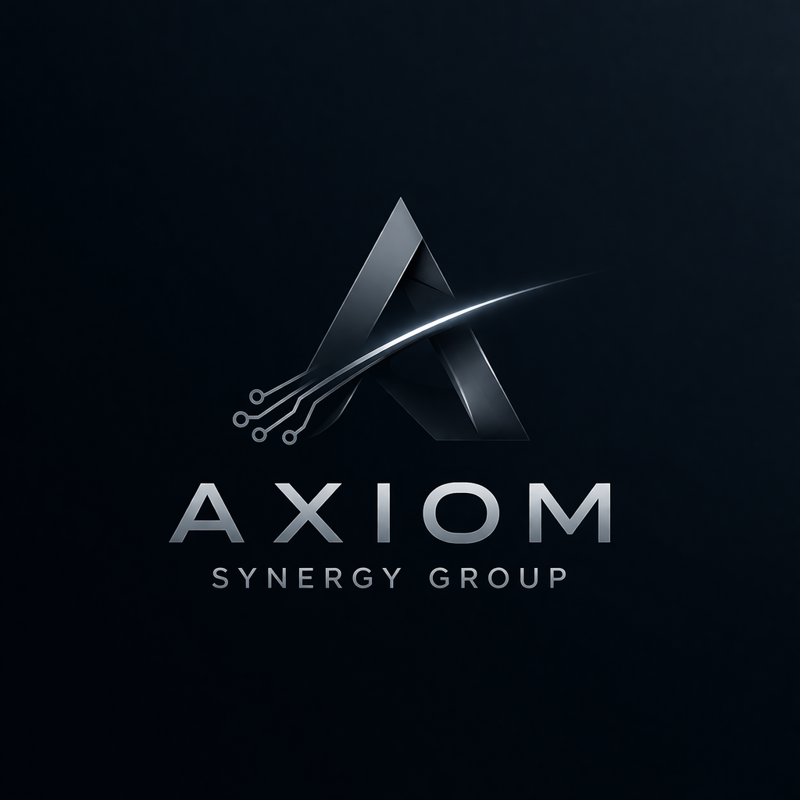

Շնորհակալություն հարցմանը մասնակցելու համար։
Axiom Synergy Group – Մենք չենք կանխատեսում ապագան, մենք այն հաշվարկում ենք։
Լրացրեք կոնտակտային տվյալները (ըստ ցանկության՝ նաև լրացուցիչ մեկնաբանություն)։